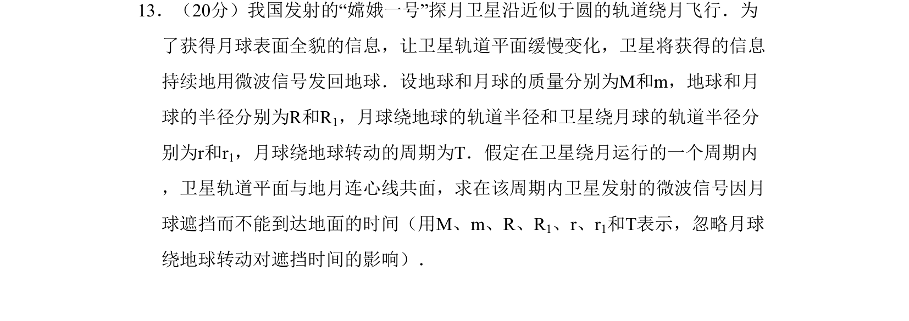
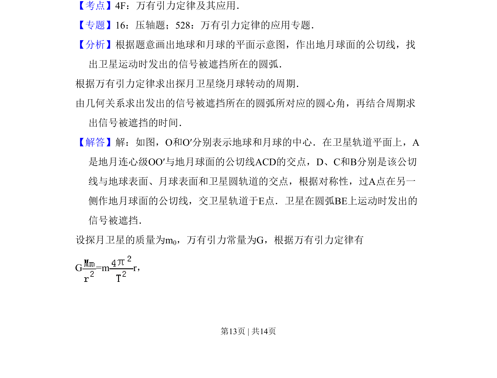
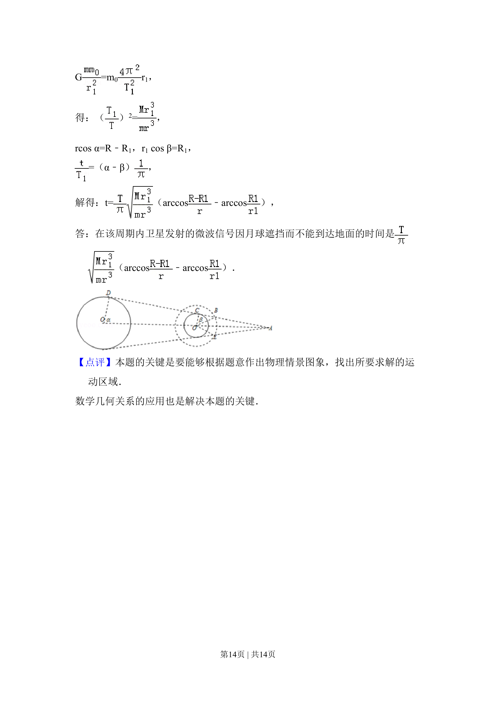

考点：万有引力定律 圆周运动 几何关系

本题通过万有引力定律和几何关系求解卫星信号被月球遮挡的时间，涉及圆周运动与空间遮挡模型。


📄 原 PDF 第 13 页：
素材/真题/吉林/2008-2024·（吉林）物理高考真题/2008年高考物理试卷（全国卷Ⅱ）（解析卷）.pdf
13．（20分）我国发射的“嫦娥一号”探月卫星沿近似于圆的轨道绕月飞行．为 了获得月球表面全貌的信息，让卫星轨道平面缓慢变化，卫星将获得的信息 持续地用微波信号发回地球．设地球和月球的质量分别为M和m，地球和月 球的半径分别为R和R1，月球绕地球的轨道半径和卫星绕月球的轨道半径分 别为r和r1，月球绕地球转动的周期为T．假定在卫星绕月运行的一个周期内 ，卫星轨道平面与地月连心线共面，求在该周期内卫星发射的微波信号因月 球遮挡而不能到达地面的时间（用M、m、R、R1、r、r1和T表示，忽略月球 绕地球转动对遮挡时间的影响）．
【考点】4F：万有引力定律及其应用．菁优网版权所有 【专题】16：压轴题；528：万有引力定律的应用专题． 【分析】根据题意画出地球和月球的平面示意图，作出地月球面的公切线，找 出卫星运动时发出的信号被遮挡所在的圆弧． 根据万有引力定律求出探月卫星绕月球转动的周期． 由几何关系求出发出的信号被遮挡所在的圆弧所对应的圆心角，再结合周期求 出信号被遮挡的时间． 【解答】解：如图，O和O′分别表示地球和月球的中心．在卫星轨道平面上，A 是地月连心级OO′与地月球面的公切线ACD的交点，D、C和B分别是该公切 线与地球表面、月球表面和卫星圆轨道的交点，根据对称性，过A点在另一 侧作地月球面的公切线，交卫星轨道于E点．卫星在圆弧BE上运动时发出的 信号被遮挡． 设探月卫星的质量为m0，万有引力常量为G，根据万有引力定律有 G =m r，